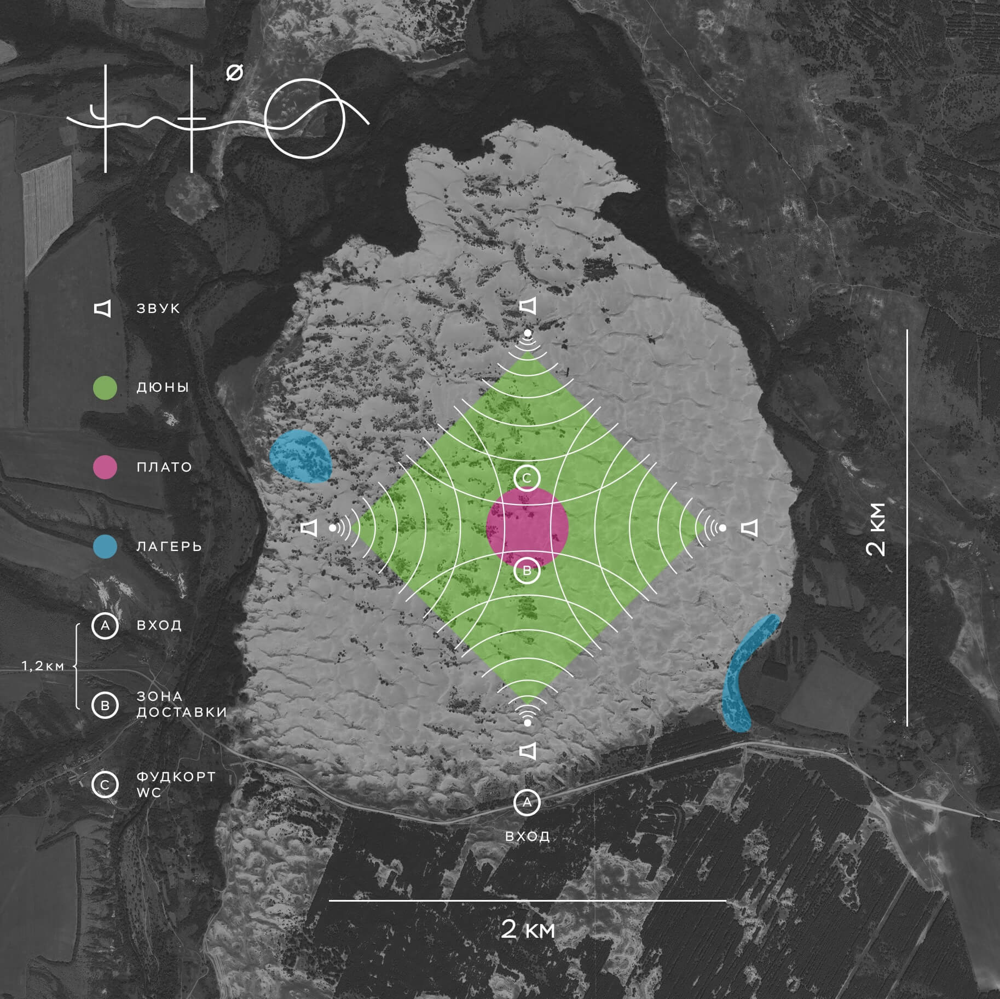

Что — это серия уникальных акустических мероприятий на стыке перформанса, саунд-арта, аудио-экспозиции, музыкального оупенэйра и туризма, проходящая на больших природных ландшафтах, где можно услышать переплетения эмбиента с музыкой эпохи ренессанса, индустриальных шумов с каноничными хоралами, дроуна с авангардом двадцатого века, различной экспериментальной, народной, академической и электронной музыкой.
Главным действующим элементом на ЧТО выступает пространство между источниками звука и слушателями: оно непривычно велико для музыкальных событий: 300-400 метров минимум и более километра в идеале. В нём музыка насыщается воздухом и приобретает новые качества, отличные от изначальных, становится буквально осязаема.

Находясь в отдалении, слушатель воспринимает звук как огромную движущуюся масу вокруг него. Вся музыка на ЧТО демонстрируется через призму эмбиента. "Ambient" — с английского "окружающий". Я предлагаю посетителю окунуться в эту атмосферу, а не просто слушать её — оказаться в этом окружении, стать его частью. "ЧТО — это как будто ты начал слушать CD, а сам уже где-то на обложке, внутри звука. Портал без портала."
Подробнее о проектеОтзывы
Текст отзыва
Место: песчаная пустыня Большие Быковские Буруны. 49.879333, 41.420388.
Время: 1 августа 2020, 18:00.
(дата может быть перенесена в связи с неподходящей погодой или иными обстоятельствами, связанными с пандемией коронавируса)
Место проведения ЧТО 2081: пески — ледникового происхождения, принесённые туда водными потоками из-под отсупающих ледников около 500 000 лет назад. "Пустыня" площадью 12 квадратных километорв находится рядом с хутором Морозовский Верхнедоского района и ровноудалена от Воронежа, Ростова-на-Дону и Волгограда примерно на 400 километров.
Площадь пустыни будет разбита на несколько зон: стандартную и престижную "ложу". "Ложа" представляет из себя квадрат 500х500 метров в самом центре пересечения и сосредоточения звука. Другими словами "ложа" аналогична местам в театре, откуда лучше всего просматривается спектакль. Квадрат будет патрулироваться людьми, следящими за порядком и соблюдением тишины в этой зоне.
Прошу обратить ваше внимание на то, что от количества проданных заранее билетов так же зависит: состоится ЧТО вовремя или нет. Если билеты не будут покупаться заведомо, ивент придётся либо перенести, либо отменить вовсе. Поэтому рекомендуется приобрести билеты предварително. Деньги можно вернуть во все дни, кроме дня мероприятия.
Стоимость билетов:
Стандартный билет — 1000р., в день мероприятия — 1300р..
Билет в "ложу" — 2000р., в день мероприятия — 2500р. (количество билетов в этой зоне, так же как и места, строго ограничено).
Купить: https://vk.com/pnstrt https://vk.com/app5745705_-180421187
Купить физические билеты в Воронеже: https://vk.com/rebelheads https://vk.com/om_vrn
Так же можно осуществить перевод на карту Сбербанка 4276130018490940 (при переводе обязателно указывайте свои ФИО и количество билетов).
К месту будет осуществляться трансфер на современных автобусах с кондиционерами и классными картинками по телевизору. В ваших же интересах забронировать и выкупить места заранее, чтобы эти автобусы не пришлось отменять. Если до опреедлённого момента осанется много свободных кресел, я дам отбой.
Добираться своим ходом на рейсовых автобусах выйдет значительно сложнее и, возможно, дороже. На своём авто нужно добираться до хутора Морозовский Верхнедонского района.
Стоимость проезда в оба конца: 1000р.
Бронь мест в Воронеже: https://vk.com/topic-180421187_42928882
Бронь мест в Волгограде: https://vk.com/topic-180421187_42928722
Бронь мест в Ростове-на-Дону: https://vk.com/topic-180421187_42927456
Гостям из Москвы: https://vk.com/topic-180421187_42928882
Гостям из других городов: обращаться к организаторам https://vk.com/chtoevent
На ЧТО действуют два основных правила — пунктуальность и тишина.
Приезжайте к 18:00, лучше раньше. Тогда вы успеете найти метсо для вашей стоянки до темноты, поскольку пустыня не маленькая — 3х4 километра. И вы, и волонтеры будут счастливы. И ещё тогда вы точно насладитесь красотой заката. Солнце садится в 20:40.
Санитарные зоны будут обозначены в картах местонсти, которые вы получите на входе в зону экспириенса.
На территорию перфоманса рекомендуем взять с собой тёплые вещи (куртка, свитер, плед), пенки или складные стулья, средства зашиты от насекомых, фонарики. Еду и воду можно взять с собой или приобрести в зоне фудкорта. Пожалуйста, проявите ответственность за самих себя.
В пустыне с рассветом очень быстро наступает жара, поэтому палатки лучше ставить в ближайшем лесу, примерно в 500-1000 метрах от основоной площадки.
Очень важно после начала аудио-перфоманса не создавать лишнего шума. Для того, чтобы обсуждать насущные дела, у вас будет целое воскресенье. Любая болтовня или шуршание пакетами создадут напряжение у соседствующих слушателей, т.к. музыка не будет заглушать этих шумов. Не забывайте, что это не свадьба и не рок-концерт. Чтобы получить максимум удовольствия от действа, сосредоточьтесь на музыке и ведите себя кротко и аккуратно по отношению к окружающим. Располагайтесь дальше друг от друга (метров на 100), тогда шансы не слышать разговоры из других компаний увеличатся. Есил же вам будут настойчиво мешать, не стесняйтесь напомнить о правилах тишины или обратиться за помощью к организатору или волонтёрам. Кроме того, на территории проведения перфоманса будет работать патруль, который будет проверять билеты и обеспечивать спокойствие и комфорт всем участникам.
Костры разводить нельзя!
Прямо сейчас и на самом ивенте можно приобрести футболки с репухами и "закосом под джой дивижн".
Цена: 1000р.
Магазин: https://vk.com/market-146434588